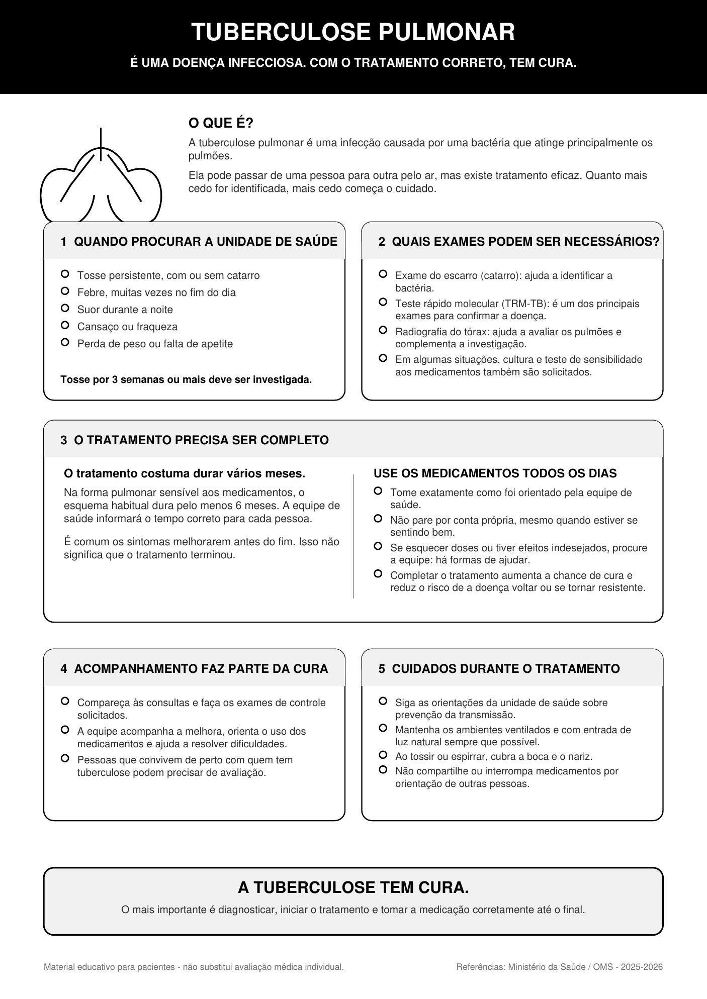

Tuberculose pulmonar

Ler o texto do infográfico
É uma doença infecciosa. Com o tratamento correto, tem cura.
O que é?
A tuberculose pulmonar é uma infecção causada por uma bactéria que atinge principalmente os pulmões. Ela pode passar de uma pessoa para outra pelo ar, mas existe tratamento eficaz. Quanto mais cedo for identificada, mais cedo começa o cuidado.
1. Quando procurar a unidade de saúde
- Tosse persistente, com ou sem catarro
- Febre, muitas vezes no fim do dia
- Suor durante a noite
- Cansaço ou fraqueza
- Perda de peso ou falta de apetite
Tosse por 3 semanas ou mais deve ser investigada.
2. Quais exames podem ser necessários?
- Exame do escarro (catarro): ajuda a identificar a bactéria.
- Teste rápido molecular (TRM-TB): é um dos principais exames para confirmar a doença.
- Radiografia do tórax: ajuda a avaliar os pulmões e complementa a investigação.
- Em algumas situações, cultura e teste de sensibilidade aos medicamentos também são solicitados.
3. O tratamento precisa ser completo
O tratamento costuma durar vários meses. Na forma pulmonar sensível aos medicamentos, o esquema habitual dura pelo menos 6 meses. A equipe de saúde informará o tempo correto para cada pessoa.
É comum os sintomas melhorarem antes do fim. Isso não significa que o tratamento terminou.
Use os medicamentos todos os dias
- Tome exatamente como foi orientado pela equipe de saúde.
- Não pare por conta própria, mesmo quando estiver se sentindo bem.
- Se esquecer doses ou tiver efeitos indesejados, procure a equipe: há formas de ajudar.
- Completar o tratamento aumenta a chance de cura e reduz o risco de a doença voltar ou se tornar resistente.
4. Acompanhamento faz parte da cura
- Compareça às consultas e faça os exames de controle solicitados.
- A equipe acompanha a melhora, orienta o uso dos medicamentos e ajuda a resolver dificuldades.
- Pessoas que convivem de perto com quem tem tuberculose podem precisar de avaliação.
5. Cuidados durante o tratamento
- Siga as orientações da unidade de saúde sobre prevenção da transmissão.
- Mantenha os ambientes ventilados e com entrada de luz natural sempre que possível.
- Ao tossir ou espirrar, cubra a boca e o nariz.
- Não compartilhe ou interrompa medicamentos por orientação de outras pessoas.
A tuberculose tem cura. O mais importante é diagnosticar, iniciar o tratamento e tomar a medicação corretamente até o final.